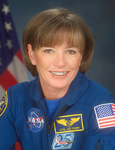

Lyndon B. Johnson Space Center
Houston, Texas 77058
|
National Aeronautics and Space Administration Lyndon B. Johnson Space Center Houston, Texas 77058 |
 |
Biographical Data |
||
Anna L. Fisher (M.D.)
NASA Astronaut
PERSONAL DATA: Born August 24, 1949, in New York City, New York, but considers San Pedro, California, to be her hometown. Fisher enjoys snow and water skiing, jogging, flying, scuba diving, reading, photography and spending time with her daughters. Her mother, Riley F. Tingle, formerly of San Pedro, now resides in Houston. Her father is deceased.
EDUCATION: Graduated from San Pedro High School, San Pedro, California, 1967; received a Bachelor of Science in Chemistry and a Doctor of Medicine from the University of California, Los Angeles (UCLA), 1971 and 1976, respectively; received a Master of Science in Chemistry from UCLA, 1987.
SPECIAL HONORS: Awarded a National Science Foundation Undergraduate Research Fellowship, 1970, 1971; Graduated from UCLA cum laude and with honors in chemistry; NASA Space Flight Medal; Lloyd’s of London Silver Medal for Meritorious Salvage Operations; Mother of the Year Award, 1984; UCLA Professional Achievement Award; UCLA Medical Professional Achievement Award; NASA Exceptional Service Medal, 1999.
EXPERIENCE: After graduating from UCLA in 1971, Fisher spent a year in graduate school, working in the field of x-ray crystallographic studies of metallocarbonanes. She co-authored three publications relating to these studies for the Journal of Inorganic Chemistry. She began medical school at UCLA in 1972 and, following graduation in 1976, commenced a one year internship at Harbor General Hospital in Torrance, California. After completing that internship, she specialized in emergency medicine and worked in several hospitals in the Los Angeles area.
NASA EXPERIENCE: Fisher was selected as an astronaut by NASA in January 1978. In August 1979, she completed a one year training and evaluation period, making her eligible for assignment as a mission specialist on space shuttle flight crews. Following her completion of training, Fisher’s early NASA assignments (pre-STS-1 through STS-4) included the following: crew representative to support development and testing of the Remote Manipulator System (RMS); crew representative to support development and testing of payload bay door contingency spacewalk procedures, the extra-small Extravehicular Mobility Unit (EMU) and contingency in-orbit Thermal Protection System (TPS) repair hardware and procedures; verification of flight software at the Shuttle Avionics Integration Laboratory (SAIL), where she reviewed test requirements and procedures for ascent, in-orbit and Risk Management System (RMS) software verification; and crew evaluator for verification and development testing for STS-2, 3 and 4.
From STS-5 through STS-7, Fisher was assigned as a crew representative to support vehicle integrated testing and payload testing at NASA’s Kennedy Space Center, Florida. In addition, Fisher supported each Orbital Flight Test (STS-1 through STS-4) launch and landing (at prime or backup sites) as a physician in the rescue helicopter and provided both medical and operational inputs on the development of rescue procedures. Fisher was also an in-orbit Capsule Communicator (CAPCOM) for the STS-9 mission.
Fisher was a mission specialist on STS-51A, which launched from Kennedy Space Center, on November 8, 1984. She was accompanied by mission commander Frederick (Rick) Hauck pilot David M. Walker, and fellow mission specialists, Joseph P. Allen and Dale H. Gardner. This was the second flight of the orbiter Discovery. During the mission, the crew deployed two satellites: Canada’s Anik D-2 (Telesat H) and Hughes’ LEASAT-1 (Syncom IV-1) and operated the Radiation Monitoring Equipment (RME) device and the 3M Company’s Diffusive Mixing of Organic Solutions (DMOS) experiment. As the first space salvage mission, the crew also retrieved the Palapa B-2 and Westar VI satellites for return to Earth. STS-51A completed 127 Earth orbits before landing at Kennedy Space Center on November 16, 1984. With the completion of her first flight, Fisher logged a total of 192 hours in space.
Fisher was assigned as a mission specialist on STS-61H, prior to the Challenger accident. Following the accident, she worked as the deputy of the Mission Development branch of the Astronaut Office and as the astronaut office representative for Flight Data File issues. In that capacity, she served as the crew representative on the Crew Procedures Change Board. Fisher served on the Astronaut Selection Board for the 1987 class of astronauts. Fisher also served in the Space Station Support office, where she worked part time in the Space Station Operations branch. She was the crew representative supporting space station development in the areas of training, operations concepts and the health maintenance facility.
From 1989 through 1995, Fisher was on a leave of absence from the Astronaut Office to raise her family, returning in January 1996. From 1996 through 2002, during the early phase of building the International Space Station (ISS), Fisher was the chief of the Space Station branch. In that capacity, she coordinated inputs to the operations of the space station for the Astronaut Office, working closely with all the international partners and supervising assigned astronauts and engineers. From January 2011 through August 2013, Fisher served as an ISS Capsule Communicator (CAPCOM) working in the Mission Control Center and was also the lead CAPCOM for Expedition 33. Currently, Fisher is a management astronaut, working on display development for the Orion Multi-Purpose Crew Vehicle (MPCV) and supports European payloads for the ISS Integration branch.
JULY 2014